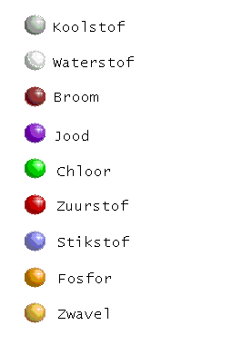

|  |
Inleiding
In deze pagina's bevindt zich een lesmethode voor Organische scheikunde waarin de gebruiker
kennismaakt met stereochemie. Onder meer worden de tetraeder, de vlakke en lineaire structuur,
draaibaarheid en optische isomerie besproken.
Al deze uitleg vindt plaats aan de hand van drie-dimensionale ruimtelijke modellen. Om deze modellen
te kunnen bekijken is de plug-in Chime voor de browser vereist, zoals op de introductie-pagina
vermeld is.
De indeling is als volgt:
- Ruimtelijke structuren
- Methaan, tetraeder
- Ethaan
- Etheen, trigonale structuur
- Ethyn, lineaire structuur
- Conformaties en Stereoisomeren
- Draaien in ethaan
- Draaien in etheen, cis/trans
- Cyclische structuren
- Cycloalkanen
- Cyclohexaan, stoel en boot
- Cis en trans
- Optische isomerie
- 1 asymmetrisch C atoom
- 2 asymmetrische centra
- Optische activiteit
- Substitutie mechanismen
- Een testje
|
 In de tekst zijn hier en daar vragen opgenomen. Sommige met antwoord, andere
zonder. Mocht u over de vragen willen corresponderen, of anderszins
opmerkingen hebben over de inhoud, dan kan dat bijvoorkeur via een e-mail aan
Hens Borkent, borkent@cmbi.kun.nl.
In de tekst zijn hier en daar vragen opgenomen. Sommige met antwoord, andere
zonder. Mocht u over de vragen willen corresponderen, of anderszins
opmerkingen hebben over de inhoud, dan kan dat bijvoorkeur via een e-mail aan
Hens Borkent, borkent@cmbi.kun.nl.